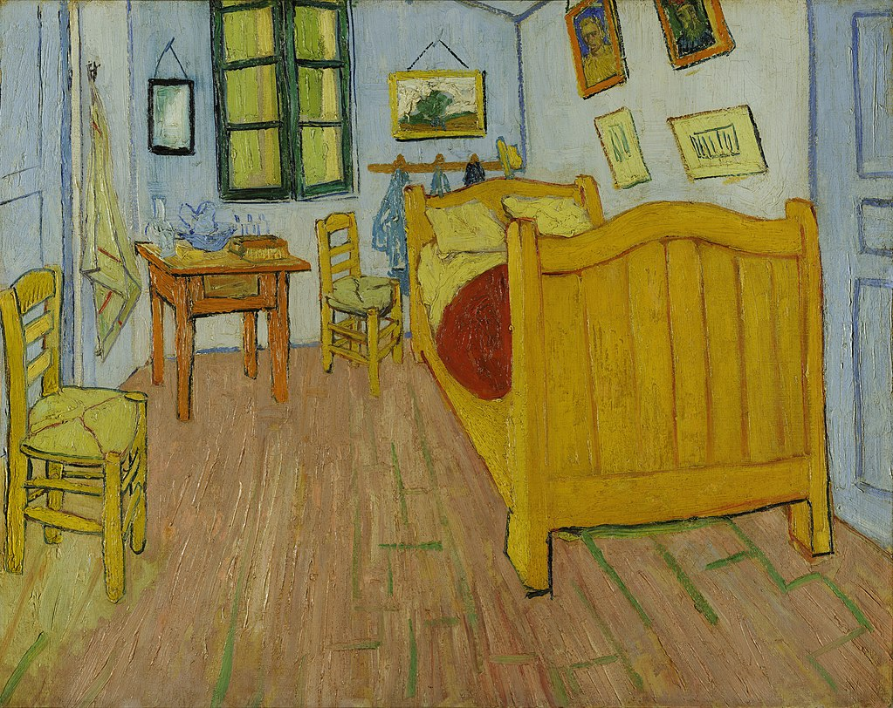
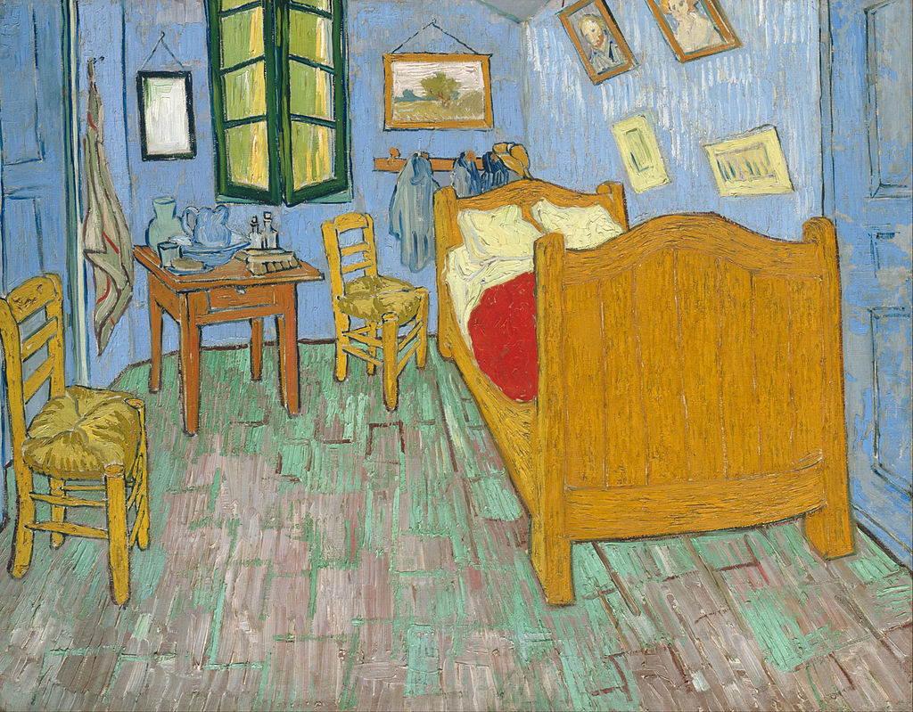
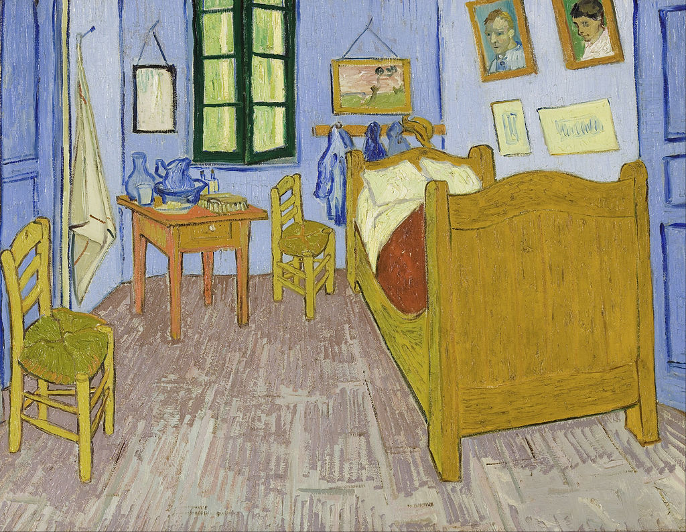

<head>
<meta charset="UTF-8" />
<meta name="keywords" content="drawing, painting" />
<meta name="description" content="drawings by Sunjy" />
<title>Sunjy</title>
<link rel="shortcut icon" type="image/x-icon" href="../../mImages/mCommon/favicon.ico" media="screen" />
<link rel="stylesheet" type="text/css" href="../../mCsses/mCommon/mCssA.css" />
<link rel="stylesheet" type="text/css" href="../../mCsses/mCommon/mCssB.css" />
<link rel="stylesheet" type="text/css" href="../../mCsses/mCommon/mCssC.css" />
<link rel="stylesheet" type="text/css" href="../../mCsses/mCommon/mCssD.css" />
<link rel="stylesheet" type="text/css" href="../../mCsses/mContent/mCssA.css" />
<link rel="stylesheet" type="text/css" href="../../mCsses/mContent/mCssB.css" />
<link rel="stylesheet" type="text/css" href="../../mCsses/mContent/mCssC.css" />
<link rel="stylesheet" type="text/css" href="../../mCsses/mContent/mCssD.css" />
</head>
<script type="text/javascript" src="../../mScripts/mContent/mContentAA.js" /></script>
<script type="text/javascript" src="../../mScripts/mContent/mContentAB.js" /></script>
<script type="text/javascript" src="../../mScripts/mContent/mContentAC.js" /></script>
<script type="text/javascript" src="../../mScripts/mContent/mContentAD.js" /></script>
<script type="text/javascript"></script> 
<script type="text/javascript">
document.write('<div class="mImgAbsolute"></div>');
/*
document.write('<p class="mFontSizeBColor" />From a white paper...</p>');
document.write('<table class="center"><tr><td>');
document.write('');
document.write('</td></tr></table>');
*/
</script>


<script type="text/javascript">
document.write('<p class="mFontSizeBColor" />Bedroom in Arles</p>');
document.write('<p class="mFontSizeSColor" />“Bedroom in Arles” by Vincent van Gogh describes three similar paintings by the Dutch Post-Impressionist painter created between 1888 – 1889.<br><br>Van Gogh’s title for this composition was simply “The Bedroom.” There are three versions, easily distinguishable from one another by the pictures on the wall to the right.<br><br>Van Gogh depicted his bedroom at 2, Place Lamartine in Arles, Bouches-du-Rhône, France, known as the Yellow House.<br><br>The open door leads to the upper floor and the staircase. The closed-door was for the guest room he held prepared for Gauguin.<br><br>The window looked on to Place Lamartine and its public gardens. The bedroom was not rectangular but trapezoid, so no wall was at a right angle to any other wall.<br><br>This reality may have contributed to the picture’s energy and instability, which is heightened by the prominent receding perspective.<br><br>Van Gogh started the first version in October 1888.  In a letter, he explained that the painting had come out of a sickness that left him bedridden for days.<br><br>Van Gogh explained his aims to his brother Theo:<br><br>“This time it simply reproduces my bedroom, but color must be abundant in this part, its simplification adding a rank of grandee to the style applied to the objects, getting to suggest a certain rest or dream. <br><br>Well, I have thought that on watching the composition we stop thinking and imagining. I have painted the walls pale violet. The ground with checked material. <br><br>The wooden bed and the chairs, yellow like fresh butter; the sheet and the pillows, lemon light green. The bedspread, scarlet-colored. The window, green. <br><br>The washbasin, orangey; the tank, blue. The doors, lilac. And, that is all. There is not anything else in this room with closed shutters.<br><br>“The square pieces of furniture must express unswerving rest; also, the portraits on the wall, the mirror, the bottle, and some costumes. <br><br>The white color has not been applied to the picture, so its frame will be white, aimed to get me even with the compulsory rest recommended for me. <br><br>I have depicted no type of shade or shadow; I have only applied simple plain colors, like those in crêpes.”<br></p>');
document.write('<table class="center" /><tr><td>');
document.write('<br>Van Gogh’s title for this composition was simply “The Bedroom.” There are three versions, easily distinguishable from one another by the pictures on the wall to the right.<br><br>Van Gogh depicted his bedroom at 2, Place Lamartine in Arles, Bouches-du-Rhône, France, known as the Yellow House.<br><br>The open door leads to the upper floor and the staircase. The closed-door was for the guest room he held prepared for Gauguin.<br><br>The window looked on to Place Lamartine and its public gardens. The bedroom was not rectangular but trapezoid, so no wall was at a right angle to any other wall.<br><br>This reality may have contributed to the picture’s energy and instability, which is heightened by the prominent receding perspective.<br><br>Van Gogh started the first version in October 1888.  In a letter, he explained that the painting had come out of a sickness that left him bedridden for days.<br><br>Van Gogh explained his aims to his brother Theo:<br><br>“This time it simply reproduces my bedroom, but color must be abundant in this part, its simplification adding a rank of grandee to the style applied to the objects, getting to suggest a certain rest or dream. <br><br>Well, I have thought that on watching the composition we stop thinking and imagining. I have painted the walls pale violet. The ground with checked material. <br><br>The wooden bed and the chairs, yellow like fresh butter; the sheet and the pillows, lemon light green. The bedspread, scarlet-colored. The window, green. <br><br>The washbasin, orangey; the tank, blue. The doors, lilac. And, that is all. There is not anything else in this room with closed shutters.<br><br>“The square pieces of furniture must express unswerving rest; also, the portraits on the wall, the mirror, the bottle, and some costumes. <br><br>The white color has not been applied to the picture, so its frame will be white, aimed to get me even with the compulsory rest recommended for me. <br><br>I have depicted no type of shade or shadow; I have only applied simple plain colors, like those in crêpes.”<br>" />');
document.write('</td></tr></table>');
document.write('<p class="mFontSizeBColor" />Bedroom in Arles</p>');
document.write('<p class="mFontSizeSColor" />second version</p>');
document.write('<table class="center" /><tr><td>');
document.write('');
document.write('</td></tr></table>');
document.write('<p class="mFontSizeBColor" />Bedroom in Arles</p>');
document.write('<p class="mFontSizeSColor" />the third version</p>');
document.write('<table class="center" /><tr><td>');
document.write('');
document.write('</td></tr></table>');
</script>


